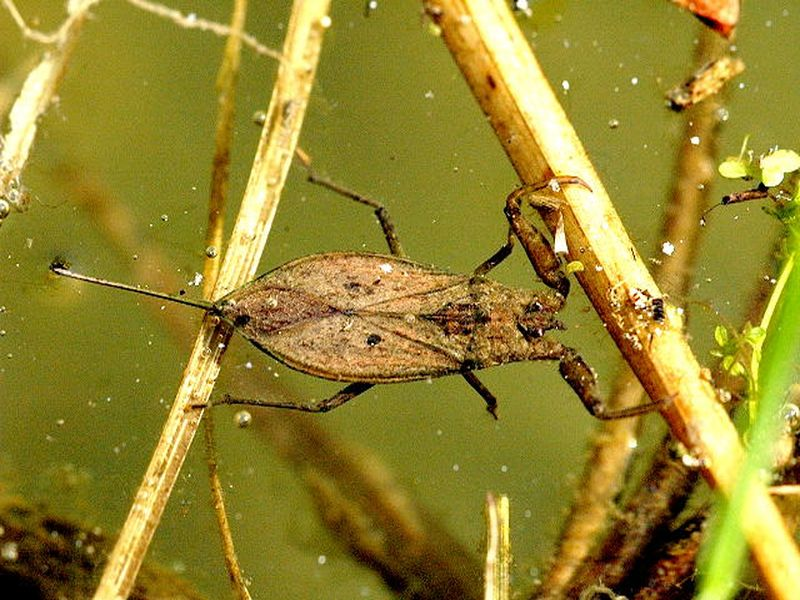

Wasserskorpion
Nepa cinerea
Der Wasserskorpion, eine Wasserwanze, lebt räuberisch am Grunde schlammiger Steh-Gewässer, so auch in unserern Lehrpfad-Tümpeln. Die Nahrung besteht aus Insekten, Kaulquappen und kleinen Fischen. Zum Luftholen klettern die Tiere an Pflanzenstengeln hoch und schieben das Atemrohr aus dem Wasser.